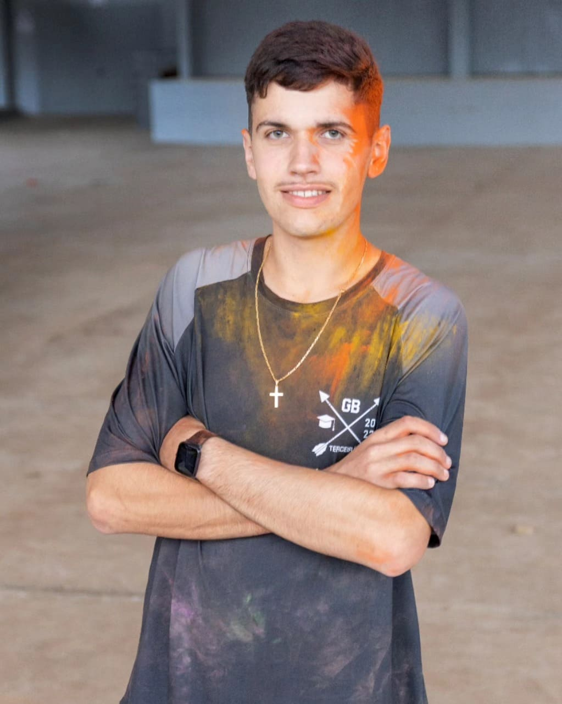

Minhas Redes
Email: ricardo_rantunes22@hotmail.com
Olá, eu me chamo Ricardo sou estudante em Ciência da Computação na Atitus Educação, meu maior desejo de atuação nessa área é front end. Procuro uma nova oportunidade para experiências desafiadoras em minha carreira e acredito que é dessa forma que um profissional pode se manter em constante evolução.
Desde criança, sempre fui fascinado por entender como as coisas funcionam. Enquanto outras crianças brincavam com seus brinquedos, eu estava mais interessado em desmontá-los e explorar seus mecanismos internos. Essa curiosidade insaciável me levou a desenvolver uma paixão por mecânicas e tecnologias desde muito cedo.
Conforme fui crescendo, meu interesse por desmontar e remontar objetos evoluiu para uma busca por entender sistemas mais complexos. Passei a me interessar por mecânica e, eventualmente, pela computação. Cada nova descoberta me encantava e alimentava meu desejo de aprender mais, no ano de 2023 realizei a prova Enem e fui aprovado pelo sisu em Engenharia Mecânica, porém computação sempre foi meu forte, mas ao mesmo tempo sou fascinado por Veículos Automotores, mesmo assim pensando e refletindo muito decidi em seguir na área de Computação.
Hoje, estou cursando Ciência da Computação, um campo que combina perfeitamente com a minha curiosidade de entender e criar. Durante o curso me preparo para contribuir com inovações significativas no futuro.Minha jornada acadêmica é mais do que uma simples escolha de carreira. Estou ansioso para ver onde essa jornada me levará e como poderei usar minhas habilidades e conhecimentos para fazer a diferença no mundo.
Email: ricardo_rantunes22@hotmail.com


● Workshop - Atitus Educação - 2024
● XIX Fórum de Meio Ambiente da Juventude do Alto Uruguai Gaúcho URI ERECHIM 2023
● XIX Fórum de Meio Ambiente da Juventude do Alto Uruguai Gaúcho URI ERECHIM 2022
● HTML5 E CSS3 Curso em vídeo Guanabara 120 horas - 2024
● Git e GitHub Curso em vídeo Guanabara 20 horas - 2024
● Qualificação em Desenvolvimento de Aplicações Junior 400 Horas - Atitus Educação
 LinkedIn
LinkedIn Instagram
Instagram GitHub
GitHub